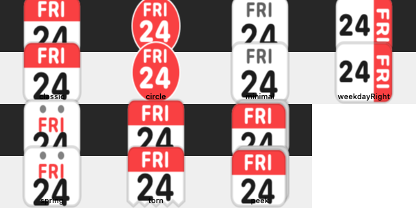

Click the date.
See the month.
A simple, native monthly calendar for your Mac menu bar. No events, accounts, weather, or distractions — just the calendar.
Free · macOS 14 Sonoma or later · Apple Silicon & Intel

A simple, native monthly calendar for your Mac menu bar. No events, accounts, weather, or distractions — just the calendar.
Free · macOS 14 Sonoma or later · Apple Silicon & Intel
Like the Windows taskbar calendar, but native to your Mac. Click the date in your menu bar and the month is right there.
One click opens the month. Today is highlighted, and navigation is instant — arrows, scroll, trackpad swipe, or keyboard.
Show the date, weekday, or a tear-off calendar icon — in seven shapes and ten colors. Pick your language, too.
No accounts, no analytics, no network. Calendar Bar never asks for your calendars, contacts, or location. Everything stays on your Mac.
Built with Swift and AppKit. Under 30 MB of memory, no Dock icon, and effectively zero CPU when idle.
